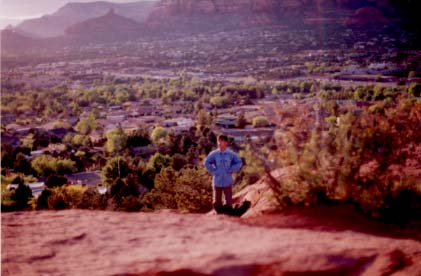

セドナ日記 〜 あとがき
まとめる必要はないのだけれど....
 最後まで読んでくれてどうもありがとうございました。
僕にとってセドナはなんだったのか、感じるままに連ねて見ました
何か不思議な体験でもできるかな、と期待したセドナだったが、結局そういうものには巡り会えなかった。UFOも飛ばなかったし、神秘体験とやらにも縁がなかった。しかし、多くの奇跡に遭遇できたいた事を、この日記を書き終えた今、実感することができる。僕が、セドナに行ったこと自体、起りうるためにはかなりの条件がそろう必要があった。
数々の偶然が重なって、僕はセドナでのいろんな、「ハプニング」を経験することができた。
「もし、聖なる予言を読まなかったら」、「もし、千穂に再会しなかったら」、「もし.....」というふうに、僕に起った、多くの出来事、出会いがなかったら、このセドナ旅行はなかったのだろうか？
振り返れば、セドナの地に続く完璧なシナリオがあったことに気付く。これは、奇跡ではないか。
さらに、その地で、出会った人々、風景、食事、ボルテックス、朝日と夕日......そんな全ての僕との関わりが、完璧なまでの奇跡だと思う。
実は、セドナの後も、6月に「北海道でキャンプ」、8月には「カナダ・バンクーバー島を訪問／シャチに逢う」、11月「富士山で獅子座流星群観測」へと続く。
これらの旅行中はもちろん、ちょっとしたきっかけから、素晴しい人達に出会うことになる。
5月に目次だけつくって、ほっておいた、このセドナのページだが、作成再会を決意させてくれたのも、10月に出会った、素晴しい人達だった。（応援してくれたみなさん本当にありがとうございました）セドナ旅行は僕にとって、結果でもあり、通過点でもあり、始まりでもあったと思う。
しかし、考えて見れば、セドナに限らずとも、僕が経験すること全てが、なにかの成果であり、また次の何かのきっかけに違いない。
98年は、僕の、そんな、なにか「流れ」のようなものが急激に速く、大きくなった年だった。
そして、僕の世界は、奇跡に満ちている事を感じることになった年でもあった。僕が住んでいる横浜の街は、セドナのように自然と調和し、静かに過ごせる場所ではないかもしれない。
しかし、その横浜の地でも、僕は、奇跡のなかにいたことに気付いている。
空はやはり、大きい。雲だって大きい。そんな、大空を使った朝焼けや、夕焼けの舞台が、毎日繰り返されていることだけでも、僕が雄大な自然現象のなかで生活していることがわかる。
朝日に赤く染まる富士山。人類の英知とも言える、ランドマークタワー。夜空は明るいが流れ星だって見える。僕が、実は大自然や地球の一部だったことを思い出すとき、横浜の風景はあまり理想的ではないかもしれない。しかし、僕たちは、とりあえず、巨大なビルや道路を建設する力を持っているのだ。
その力を、僕らの本来の姿、大自然の一部としての人間の本質にそって使えば、僕のすむこの街も、素晴しい、大自然の一部、人類の本当の知恵の都市になることができると思う。理想にすぎない？
でも、理想っていうのは、実現可能な一番いい結果ではないのか？
僕は、この都会から逃げ出そうと思っていたのだけれど、この都会をそんな理想の街にする、役割を担ってるのかもしれないと感じている。
僕一人では、できないかもしれない。
でも、あなたも、仲間かもしれない。
セドナは素晴しいけど、僕のすむ街も、素晴しいはずだ。
世界中の全ての場所が素晴しいはずだ。
だから、世界中の全ての場所が素晴しい理想の地なのだ。
だから、僕のすむ街は素晴しい理想の地なのだ。セドナの「地」・「場」が僕にくれた贈り物。
僕が地球人としての自由と責任を自覚すること。
そして、何処にいても、僕が奇跡の瞬間を生きていることを思い出させてくれることであった。最後にもう一度、応援してくれた皆さんと、読んでくれたあなたに感謝します。
どうもありがとう。本当にありがとう。99.01.08
Thank you very much. Best Love, Takao